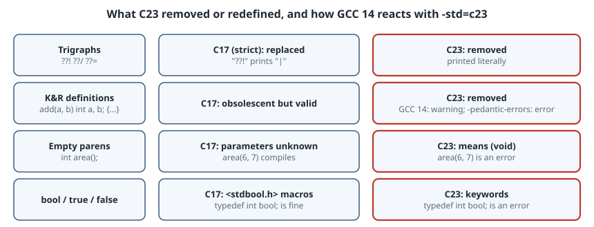

What C23 Removed: Trigraphs, K&R Definitions and () Meaning “Anything”
What C23 Removed: Trigraphs, K&R Definitions and () Meaning “Anything”
Thesis
Most of what is written about C23 lists the additions: nullptr, constexpr, #embed, typeof. Old code is more likely to be affected by the removals. C23 deletes features that had been in the language since 1989 or earlier:
- trigraphs
- function definitions with identifier lists (K&R style)
- function declarators without prototypes, so
int f();now meansint f(void); bool,trueandfalseas macros: they are now keywords
C23 also makes two’s complement mandatory and turns realloc(p, 0) into undefined behaviour. GCC 15 changed its default C dialect from gnu17 to gnu23 (GCC 15 porting guide), so these changes now reach code that never asked for C23. This chapter compiles each one as C17 and as C23 so you can see exactly what changes.

The box has GCC 14.2.0, which supports -std=c23 but still defaults to gnu17. Every result below uses an explicit -std= flag, so it matches what GCC 15’s new default does for the C23 changes. GCC 15 was not run here.
The test files
/* trigraph.c */
#include <stdio.h>
int main(void) {
printf("Really??! (and a path: C:??/temp)\n");
return 0;
}/* knr.c */
#include <stdio.h>
int add(a, b)
int a, b;
{
return a + b;
}
int main(void) { printf("%d\n", add(2, 3)); return 0; }/* emptyparens.c */
#include <stdio.h>
int area(); /* "unknown parameters" before C23 */
int main(void) {
printf("%d\n", area(6, 7));
return 0;
}
int area(int w, int h) { return w * h; }/* booltypedef.c */
#include <stdio.h>
typedef int bool;
#define true 1
#define false 0
int main(void) { bool ok = true; printf("ok=%d\n", ok); return 0; }(The filename comment above each listing isn’t part of the compiled file. Line numbers in the diagnostics count from the #include.)
#!/bin/sh
# compile each file as strict C17 and as C23 with GCC 14
for f in trigraph knr emptyparens booltypedef; do
for std in c17 c23; do
echo "\$ gcc -std=$std -pedantic -Wall $f.c -o $f && ./$f"
gcc -std=$std -pedantic -Wall $f.c -o $f 2>&1 && ./$f
echo "[exit $?]"
done
done$ gcc -std=c17 -pedantic -Wall trigraph.c -o trigraph && ./trigraph
trigraph.c: In function ‘main’:
trigraph.c:3:19: warning: trigraph ??! converted to | [-Wtrigraphs]
3 | printf("Really??! (and a path: C:??/temp)\n");
trigraph.c:3:36: warning: trigraph ??/ converted to \ [-Wtrigraphs]
Really| (and a path: C: emp)
[exit 0]
$ gcc -std=c23 -pedantic -Wall trigraph.c -o trigraph && ./trigraph
trigraph.c: In function ‘main’:
trigraph.c:3:19: warning: trigraph ??! ignored, use -trigraphs to enable [-Wtrigraphs]
3 | printf("Really??! (and a path: C:??/temp)\n");
trigraph.c:3:38: warning: trigraph ??/ ignored, use -trigraphs to enable [-Wtrigraphs]
Really??! (and a path: C:??/temp)
[exit 0]
$ gcc -std=c17 -pedantic -Wall knr.c -o knr && ./knr
5
[exit 0]
$ gcc -std=c23 -pedantic -Wall knr.c -o knr && ./knr
knr.c: In function ‘add’:
knr.c:2:5: warning: old-style function definition [-Wold-style-definition]
2 | int add(a, b)
| ^~~
5
[exit 0]
$ gcc -std=c17 -pedantic -Wall emptyparens.c -o emptyparens && ./emptyparens
42
[exit 0]
$ gcc -std=c23 -pedantic -Wall emptyparens.c -o emptyparens && ./emptyparens
emptyparens.c: In function ‘main’:
emptyparens.c:4:20: error: too many arguments to function ‘area’
4 | printf("%d\n", area(6, 7));
| ^~~~
emptyparens.c:2:5: note: declared here
2 | int area(); /* "unknown parameters" before C23 */
| ^~~~
emptyparens.c: At top level:
emptyparens.c:7:5: error: conflicting types for ‘area’; have ‘int(int, int)’
7 | int area(int w, int h) { return w * h; }
| ^~~~
emptyparens.c:2:5: note: previous declaration of ‘area’ with type ‘int(void)’
2 | int area(); /* "unknown parameters" before C23 */
| ^~~~
[exit 1]
$ gcc -std=c17 -pedantic -Wall booltypedef.c -o booltypedef && ./booltypedef
ok=1
[exit 0]
$ gcc -std=c23 -pedantic -Wall booltypedef.c -o booltypedef && ./booltypedef
booltypedef.c:2:13: error: two or more data types in declaration specifiers
2 | typedef int bool;
| ^~~~
booltypedef.c:2:1: warning: useless type name in empty declaration
2 | typedef int bool;
| ^~~~~~~
[exit 1]1. Trigraphs are gone (N2940)
Trigraphs such as ??=, ??/ and ??! were added in C89 for keyboards without #, \ and |. They are replaced in translation phase 1, inside string literals too. In strict C17, "Really??!" prints Really|, and C:??/temp turns into C: followed by a tab and emp, because ??/ became \ and then \t became an escape. In C23 both strings print as written.
GNU dialects have ignored trigraphs all along unless you pass -trigraphs:
#!/bin/sh
# GNU dialects ignore trigraphs; K&R definitions under -pedantic-errors; the C23 fix
echo '$ gcc -std=gnu17 trigraph.c -o trigraph && ./trigraph'
gcc -std=gnu17 trigraph.c -o trigraph 2>&1 && ./trigraph
echo '$ gcc -std=c23 -pedantic-errors knr.c -o knr'
gcc -std=c23 -pedantic-errors knr.c -o knr 2>&1; echo "[exit $?]"
echo '$ gcc -std=c17 -Wstrict-prototypes -c emptyparens.c'
gcc -std=c17 -Wstrict-prototypes -c emptyparens.c 2>&1; echo "[exit $?]"$ gcc -std=gnu17 trigraph.c -o trigraph && ./trigraph
trigraph.c: In function ‘main’:
trigraph.c:3:19: warning: trigraph ??! ignored, use -trigraphs to enable [-Wtrigraphs]
3 | printf("Really??! (and a path: C:??/temp)\n");
trigraph.c:3:38: warning: trigraph ??/ ignored, use -trigraphs to enable [-Wtrigraphs]
Really??! (and a path: C:??/temp)
$ gcc -std=c23 -pedantic-errors knr.c -o knr
knr.c: In function ‘add’:
knr.c:2:5: error: old-style function definition [-Wold-style-definition]
2 | int add(a, b)
| ^~~
[exit 1]
$ gcc -std=c17 -Wstrict-prototypes -c emptyparens.c
emptyparens.c:2:1: warning: function declaration isn’t a prototype [-Wstrict-prototypes]
2 | int area(); /* "unknown parameters" before C23 */
| ^~~
[exit 0]Who is affected: code built with strict -std=c89/c99/c11/c17 that contains ?? followed by one of =/'()!<>- in a string or comment. In practice that is usually accidental, like "what??!" in a log message, and C23 fixes it rather than breaking it. Code that really relies on trigraphs (EBCDIC-era sources) must keep an older -std or pass -trigraphs.
2. K&R function definitions are removed (N2432)
int add(a, b) int a, b; { ... } is no longer C. GCC 14 doesn’t reject it in C23 mode by default. It accepts it as an extension and prints -Wold-style-definition. It becomes an error only with -pedantic-errors (second block above). Other compilers may already reject it, and GCC’s leniency is not something to depend on.
The fix is mechanical: move the types into the parameter list, int add(int a, int b). With -Wold-style-definition turned on, GCC finds every remaining case.
3. () now means (void) (N2841)
This change has the biggest effect. Before C23, int area(); declared a function with unknown parameters. Calls weren’t type-checked and every argument went through default promotions. In C23 it declares a function that takes no arguments, so area(6, 7) fails with “too many arguments”, and the later definition int area(int w, int h) fails with “conflicting types … previous declaration … with type int(void)”.
The GCC 15 porting guide gives two common real-world cases: a void (*handler)(); holding the return value of signal(), and hand-written void *malloc(); declarations that should be an #include. You can find these in C17 code before switching with -Wstrict-prototypes (last command above), which flags every non-prototype declaration.
4. bool, true, false are keywords (N2934)
C23 makes bool, true, false, alignas, alignof, static_assert and thread_local real keywords, and adds the new keyword nullptr. Projects that predate <stdbool.h> usually have their own typedef int bool;. GCC 14 rejects that with “two or more data types in declaration specifiers”, and the porting guide shows GCC 15 adding the note “‘bool’ is a keyword with ‘-std=c23’ onwards”. Delete the typedef and the macros. If the code has to build as both C17 and C23, guard them with #if __STDC_VERSION__ < 202311L.
Also changed: representation and realloc(p, 0)
- Two’s complement only (N2412). Ones’ complement and sign-magnitude are no longer allowed for signed integers. No real compiler is affected. The point is that code may now assume two’s complement representation. Signed overflow is still undefined behaviour.
realloc(p, 0)is undefined behaviour (N2464). Before C23 it was implementation-defined, and implementations disagreed about whether it freespand what it returns. Writefree(p); p = NULL;explicitly.
A migration checklist
- Build with your current
-stdplus-Wstrict-prototypes -Wold-style-definition -Wtrigraphs, and fix every warning. All of these fixes are valid C17 as well. - Search for
typedef .* bool,#define trueand#define false, and guard them with__STDC_VERSION__. - Search for
realloc(calls whose size can be zero. - Build with
-std=c23 -pedantic-errorsin CI. If you aren’t ready, pin-std=gnu17in your build files so a GCC 15 upgrade doesn’t change the language under you.
Takeaways
- C23 removes trigraphs and K&R definitions, makes
()mean(void), and turnsbool/true/falseinto keywords. - The
()change and theboolkeyword break real builds. Trigraph removal usually fixes accidental bugs. - GCC 14 still accepts K&R definitions in
-std=c23with only a warning, so use-pedantic-errorsto enforce the standard. - GCC 15 defaults to
gnu23. Either port your code or pin-std=explicitly.
Sources
- WG14 N2940 Removing trigraphs??!, N2432 Remove support for function definitions with identifier lists, N2841 No function declarators without prototypes, N2934 Revise spelling of keywords, N2412 Two’s complement sign representation, N2464 Zero-size Reallocations are Undefined Behavior
- C23 working draft N3220
- GCC, Porting to GCC 15 (“C23 by default”) and GCC 15 changes